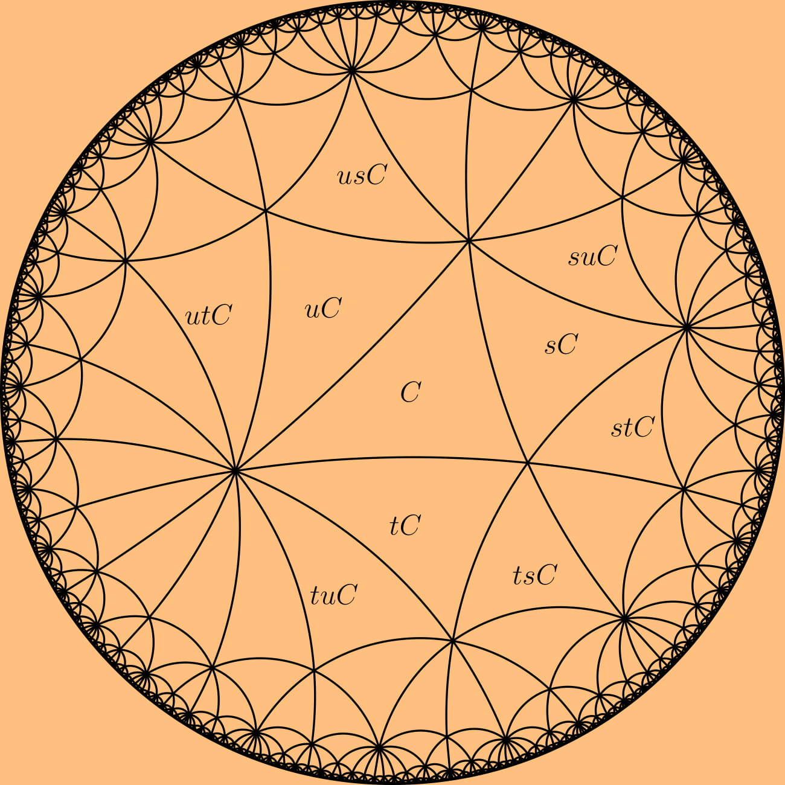

Research
My research interests lie in geometric/combinatorial group theory, specifically in the theory of buildings. I work mainly with Kac-Moody groups and groups with RGD systems. Most of my reseach questions deal with finitness properties of these groups, like finite generation or finite presentation, as well has other homological finiteness properties.

Papers
-
Finite Generation of Kac-Moody Groups over Small Fields (Doctoral Thesis, in progress)
-
The Normalizer of Coxeter Groups in the Canonical Linear Representation (in progress)
Conferences Attended
- AMS Sectional Meeting, March 2020, Charlottesville, VA
- Joint Math Meetings, January 2019, Baltimore, MD
- Conference on Combinatorial and Grometric Methods in Group Theory, May 2017, University of Illinois, IL